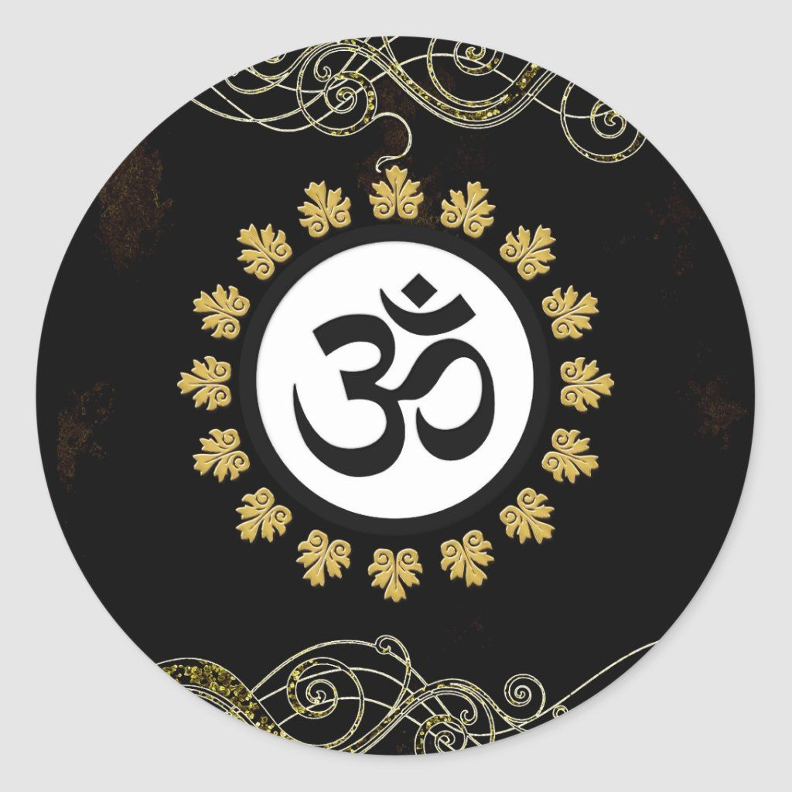
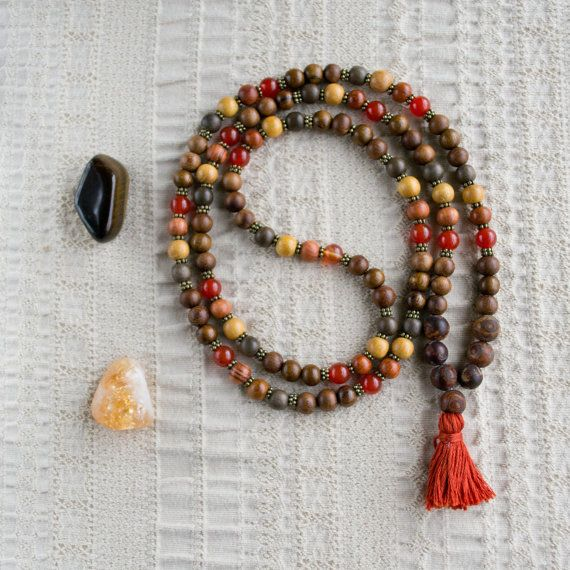
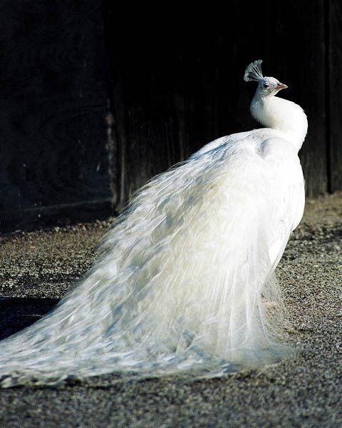
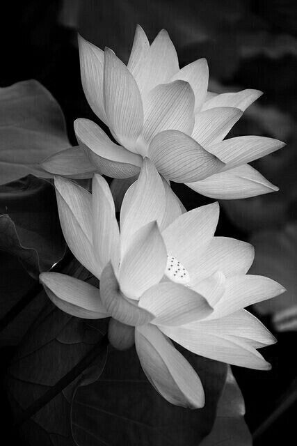
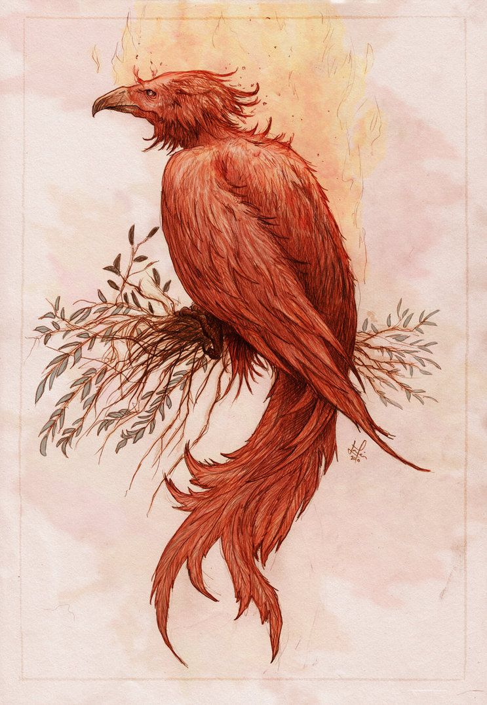

{kind=link}
Aum (Om) SyOm Symbol
In Hinduism, Om is the first sound of creation and symbolizes
the three stages of existence: birth, life, and death.
AUM (Om) consists of three separate letters, A, U, and M.
They symbolize the body, spirit and speech of the Buddha;
“Mani” is for the path of teaching; “Padme” for the wisdom of
the path, and “hum” denotes wisdom and the path to it

Bell Symbol
The ring of the bell is a symbol of the Buddha’s voice.
It also represents wisdom and compassion,
and is used to call upon the heavenly deities
for protection and to ward off evil spirits.
Many old temples have bells at the entrances that one needs to ring before entering.

{kind=link}
Bodhi Leaf & Tree
Bodhi is a Sanskrit word that means “awakening.”
he bodhi leaf is heart-shaped and exudes a bright
and lilting energy. It speaks of playfulness and thoughtfulness.
{kind=link}
Horse Symbol
In Buddhism, the horse is a symbol of energy and effort in practicing the Dharma.
The main qualities of a horse are loyalty and swiftness.
The neigh of the horse is symbolic of the Buddha’s voice to awaken
the sleepy mind to practice the Dharma. It also represents
the prana or breath that is essential for our existence.
Elephant Symbol
In Asia and Africa, elephants are deemed sacred.
They are symbols of beauty, power, dignity, intelligence and peace.
In Buddhism, elephants symbolize mental strength on the path toward enlightenment.
They are tranquil and obedient, steadfast
and unstoppable once set on a path.

{kind=link}
Mala (Recitation beads) Symbol
A mala usually consists of 9, 21, or 108 beads strung on a string.
Each bead represents one, however, the bead is not alone.
It is connected with all the other beads to make a whole strand.
As individuals, we may think we are separate, but we are connected to each other, to our family, to the world.
We are all living beings together. One cannot exist without the other.

{kind=link}
Peacock Symbol
In Buddhism, the peacock represents wisdom.
It is said that the peacock transforms the poison into amrita or nectar.
When a person has positive thoughts, his mind becomes open like
a peacock opening his tail and exhibiting its beautiful colors.

{kind=link}
Lotus Flower Symbol
The Lotus Flower is a symbol of purity, enlightenment, self-regeneration and rebirth.
Its characteristics are a perfect analogy for the human condition:
even when its roots are in the dirtiest waters, the Lotus produces the most beautiful flower.

{kind=link}
Phoenix Symbol
The mythical phoenix is used as emblems of the emperor and empress.
It represents the Confucian values of loyalty, honesty, decorum and justice.
In Buddhism, the phoenix is regarded as sacred, as it appears
only in times of peace and prosperity and hides itself when
there is trouble. Like the deer, it symbolizes peace and tranquility.
The mythical creature can also represent “an enlightened one”, rising from
the ashes of the death of ego.
